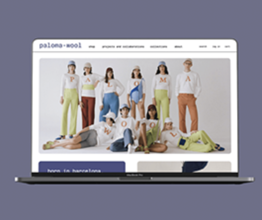
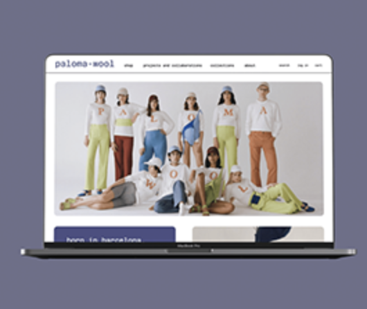

Style Guide
Rebecca Wong & Mark Duinkerke
Rebecca Wong & Mark Duinkerke
Welcome to Fluff & Fibre, where we craft everyday wardrobe essentials using exclusively organic fibers. Our commitment to sustainability is unwavering, and we proudly steer clear of synthetic materials. Embracing a greener future, we incorporate 60% recycled fibers into our products, with a dedicated goal to reach 100%. Join us on our journey towards a more sustainable and eco-friendly lifestyle!
Our target audience embraces sustainable living and ethical fashion. They value organic materials, seek everyday wardrobe staples, and prioritize eco-friendly choices. Whether you're a conscious consumer or eco-enthusiast, Fluff & Fibre caters to those who prioritize style with a sustainable edge.
Persona 1: Eco-Conscious Fashion Enthusiast
Meet Alex, our Eco-Conscious Fashion Enthusiast. Alex prioritizes sustainable living and ethical fashion, valuing everyday wardrobe staples made from organic materials. As a conscious consumer and eco-enthusiast, style with a sustainable edge is essential. Alex finds the perfect match in Fluff & Fibre, a brand that seamlessly blends fashion and eco-friendly choices.
Persona 2: City Explorer
Meet Logan, our City Explorer. Logan is a trendsetting urban dweller with a passion for eye catching style and ethical choices. Valuing everyday wardrobe staples that make a statement, Logan prioritizes brands like Fluff & Fibre, offering a curated collection that perfectly blends urban flair with responsible fashion.
Choose Fluff & Fibre for stylish everyday essentials made exclusively from organic fibers. Our commitment to sustainability, avoiding synthetic materials, and incorporating 60% recycled fibers appeals to those who value fashion with a positive impact. Embrace eco-friendly choices with Fluff & Fibre.
ABCDEFGHIJKLMNOPQRSTUVWSYZabcdefghijklmnopqrstuvwxyz
 
